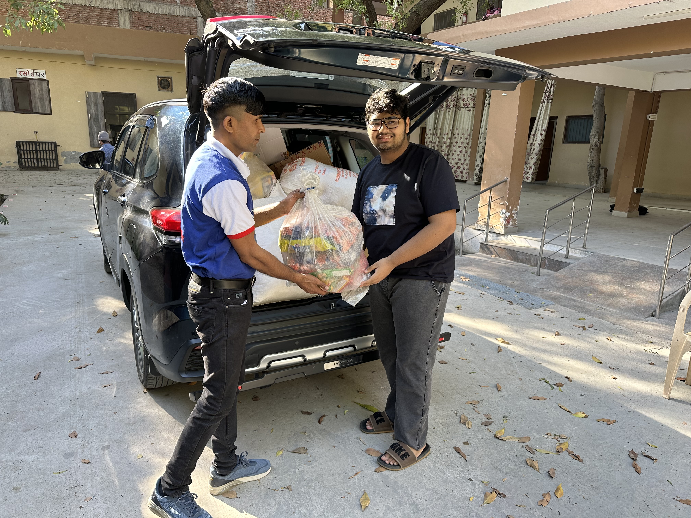

Democratizing Access Through Youth Leadership
The Aarambh Trust for Women and Children was established to alleviate systemic socio-economic barriers facing underserved communities. Recognizing the boundless energy of student cohorts, Ekaksh established and directed the Aarambh Youth Wing to channel high school students into structured community action.
Under his leadership, the Youth Wing formulated multi-week curricula covering foundational English literacy, hygiene practices, and basic digital fluency. By bridging the digital divide, students who had never operated personal computers were taught typing, web safety, and foundational software skills.
- Digital literacy workshops for disadvantaged children
- Preventive healthcare checkup camps & medicine provision
- Distribution of educational stationery & winter essentials
- Interactive web portal for donor transparency and volunteer tracking
Engineering Non-Profit Transparency
To amplify the NGO's reach and institutional credibility, Ekaksh architected a bespoke web portal for Aarambh featuring end-to-end encrypted donation processing, 80G tax receipt automation, and a live volunteer management registry. This digital transformation fueled a 300% increase in recurring donor contributions.